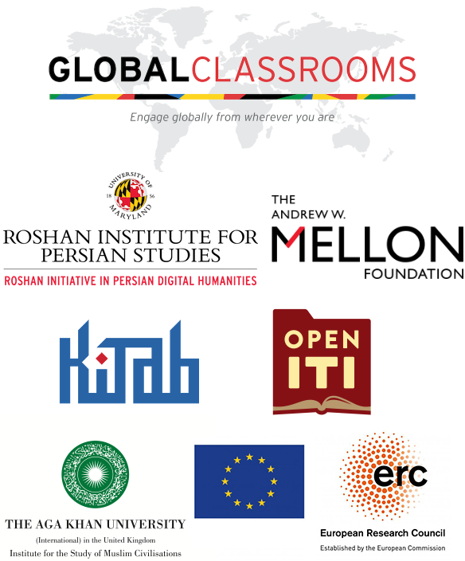

The Islamicate World 2.0: Studying Islamic Cultures through Computational Textual Analysis
Spring 2021 Th 12:30pm - 3:00pm EST
Chapter 1 Course syllabus - preliminaries
1.1 Course summary
The Islamicate World 2.0: Studying Islamic Cultures through Computational Textual Analysis is a Global Classrooms course that will be taught collaboratively by professors at the Roshan Institute for Persian Studies at the University of Maryland (College Park) and Aga Khan University (London). In this exciting, new project-based course, students from both institutions will come together to learn the basics of computational textual analysis while participating as student researchers in the nascent project of exploring the vast and largely unexplored tomes of textual data about the Islamicate world. It will also introduce students to theoretical and methodological debates in the field of global digital humanities. Like the digital humanities field that inspires its approach, it will be a highly interdisciplinary course that studies texts from multiple genres (lyric poetry to historical chronicles, legal treatises to the Quran) and languages (Arabic, Persian) with the aid of computational textual analysis tools. There are no language prerequisites, but it is preferable if students at least have elementary knowledge of either Arabic, Persian, Turkish, or Urdu.
1.2 Virtual Classroom
This course will be conducted over Zoom. The Zoom link will be provided to you in the course email group.
1.3 Instructors
1.3.1 Dr. Jonathan Parkes Allen
Office Hours: by appointment E-mail: jallen22@umd.edu Roshan Institute for Persian Studies University of Maryland, College Park Bio: Jonathan Parkes Allen is the Mellon Humanities Postdoctoral Fellow for the Open Islamicate Texts Initiative Arabic-script OCR Catalyst Project (OpenITI AOCP). He is a historian of early modern and medieval Islamicate history, with particular interests in the history of religious practice and thought in the Ottoman Empire as well as the application of digital methods to the study of global Islamicate history at scale. His current research focuses on Islamicate sainthood, devotion, and ritual, as well as the historical evolution of Arabic script and typography. Visit his website for more on his ongoing research interests.
1.3.2 Dr. Matthew Thomas Miller
Office Hours: by appointment E-mail: mtmiller@umd.edu Roshan Institute for Persian Studies University of Maryland, College Park Bio: Matthew Thomas Miller, PhD. is Assistant Professor of Persian Literature and Digital Humanities at Roshan Institute for Persian Studies at the University of Maryland, College Park and and an affiliate of the Maryland Institute for Technology in the Humanities. He also serves as the Director of the Roshan Initiative in Persian Digital Humanities (PersDig@UMD) and as the co-PI for the multi-institutional Open Islamicate Texts Initiative (OpenITI) and the Persian Manuscript Initiative (PMI). He has received funding for these projects from The Andrew W. Mellon Foundation and The National Endowment for the Humanities. His research focuses on medieval Sufi literature, the history of sexuality and the body, and digital humanities. He currently is working on a book project, entitled Beautiful Bodies: Embodiment and Mystical Modes of Meaning Creation in Medieval Persian Sufi Literature, and a number of articles on computational or “distant reading” approaches to Persian literature and carnivalesque Sufi poetry. See his website for more details.
1.3.3 Dr. Sarah Bowen Savant
Office Hours: by appointment E-mail: sarah.savant@aku.edu AKU ISMC, 10 Handyside Street, Kings Cross, London N1C 4DN Bio: At the AKU-ISMC, Professor Savant is a cultural historian working on the history and historiography of the Middle East and Iran up to 1400. She is the co-Principal Investigator, with Matthew Miller and Maxim Romanov, of the OpenITI, and the PI of the KITAB project, which focuses on Arabic book history using digital methods, especially text reuse detection. Her books include The New Muslims of Post-Conquest Iran: Tradition, Memory, and Conversion (Cambridge: Cambridge University Press, 2013) and The Excellence of the Arabs: A Translation of Ibn Qutaybah’s Faḍl al-ʿArab wa l-tanbīh ʿalā ʿulūmihā (with Peter Webb; The Library of Arabic Literature; Abu Dhabi: New York University Press, 2016) as well as articles and edited volumes on history writing, cultural memory, and the formation of identities. Her current book project - entitled A Cultural History of the Arabic Book - explores how the reuse of earlier texts helped to shape the historic tradition from its formative days onwards, as well as how authors conceived of their work and the very meaning of the book itself.
1.3.4 Dr. Peter Verkinderen
Office Hours: by appointment E-mail: peter.verkinderen@aku.edu AKU ISMC, 10 Handyside Street, Kings Cross, London N1C 4DN Bio: Peter Verkinderen is a Post-doctoral Research Fellow at KITAB working on the central regions of the Islamic lands. He studied Classics and Arabic and Islamic studies at Ghent University. His PhD dissertation, also at Ghent University, was a reconstruction of the fluvial landscape of early Islamic Lower Mesopotamia, based on (mostly Arabic) texts, satellite imagery and data from archaeological and geological research. He has worked as the assistant director of the Netherlands-Flemish Institute in Cairo (2009-2014) and as a research fellow in the ERC project “The Early Islamic Empire at Work” (Hamburg University, 2014-2019), where he focussed on the position of Fārs (SW Iran) in the early Islamic empire. His main research interests lie with the historical and geographical literature on the early Islamic empire. In recent years, the development of digital tools for historical and philological research has become one of his main interests. He is currently also involved in IslamAtlas, a research project aimed at the study and digital edition of the geographical texts and maps usually attributed to al-Iṣṭakhrī and Ibn Ḥawqal.
1.4 Required texts and technologies
Arnold, Taylor and Lauren Tilton. Humanities Data in R: Exploring Networks, Geospatial Data, Images, and Text. Springer International Publishing: 2015. ISBN: 9783319207018. Book website.
Jockers, Matthew. Text Analysis with R for Students of Literature. Springer International Publishing: 2014. ISBN: 9783319031637. Book website.
NB: These books are available through UMD libraries and in e-book format.
Download R and R Studio (R is the actual programming language, while RStudio is a convenient interface for interacting with R; you need to download and install both — first R, then RStudio): https://cran.r-project.org/ https://www.rstudio.com/
NB: Students must have or be able to borrow a laptop for classwork. This course requires extensive use of a computer.
1.5 Learning objectives
By the end of this course students will have:
- become acquainted with the major debates and tools in computational textual studies;
- developed intermediate-level skills in the R programming language;
- gained extensive experience working in international teams (termed “collaboratories” here) to solve complex problems;
- produced a mini-research publication that will be published on the course site (with the student’s permission).
1.6 Expectations and grading procedures
The grade breakdown for this class is as follows (and see more details on each element in subsections below):
- 20% Participation
- 10% Co-discussion Leading
- 20% Class Assignments
- 40% Final (Group) Project
- 10% Class (Group) Presentation
All grades will be posted on the course ELMS page. If you would like to review any of your grades, or have questions about how something was scored, please email me to schedule a time for us to meet and discuss. I am happy to discuss any of your grades with you, and if we have made a mistake we will immediately correct it. Any formal grade disputes must be submitted in writing and within one week of receiving the grade.
Final letter grades are assigned based on the percentage of total assessment points earned. To be fair to everyone I have to establish clear standards and apply them consistently, so please understand that being close to a cutoff is not the same as making the cut (89.99 ≠ 90.00). It would be unethical to make exceptions for some and not others. If you think you are very close to a cut-off point and would like the higher grade, please contact me about extra credit opportunities.
1.6.1 Final Grade Cutoffs
| + | 97.00% | + | 87.00% | + | 77.00% | + | 67.00% | + | |
| A | 93.00% | B | 84.00% | C | 74.00% | D | 64.00% | F | <60.0% |
| - | 90.00% | - | 80.00% | - | 70.00% | - | 60.00% | - |
1.6.2 Participation (20%)
Students will be expected to come to class ready to discuss each text or technical training exercises in depth. Class participation is very important. However, please note, it is the quality of participation that We are interested in—not quantity. Again, we cannot stress enough how important your regular attendance and active participation in class discussion is for your grade (for attendance policy, see #1 in the “Course Procedures and Policies” section below). If you have questions about your grade in this area, please visit me in office hours or schedule a time to come meet with me to discuss.
1.6.3 Co-discussion Leading (10%)
You will be asked to serve as co-discussion leaders (alongside the instructors) on a rotating basis for the sessions in which we have specific assigned readings. You will be responsible for introducing and contextualizing the readings for the class and formulating class discussion questions based on the readings.
1.6.4 Class Assignments (20%)
Beginning in the ninth week of the semester, you will be assigned specific assignments to complete in R. These assignments will be posted in ELMS and they must be turned in before class time in order to receive credit.
1.6.5 Final (Group) Project (40%) (and the Research Collaboratories)
This course is a project-based learning course. The final project, therefore, will occupy a substantial amount of our class time throughout the semester and will be a major component of your final grade. But, fear not! The instructors will work closely with each of you and your groups to construct a collaborative research project. You will spend much of the second half of the course working on this project during class time with your fellow group members in the “research collaboratory” groups that we will form in week 11.
At the conclusion of each research collaboratory session, each student will take on an assignment, which must be completed before the next class period. These will be reported to the instructors after class so they can keep track of each individual’s contributions to the project and grade them on these weekly assignments. These tasks will vary greatly on the basis of each group’s project: some students may be working on cleaning and/or reformatting texts, others on developing a R script, and still others may be tasked with doing traditional humanities research in order to properly contextualize the results of the group’s new computational textual analysis. We do not expect that you will have all of the answers when you begin work on your final project. You will need to play and experiment with the texts and different modes of textual analysis and visualization available to you in R, and you certainly will hit dead ends and completely fail (productively) at times too. In this process, however, you will learn a great deal, as the research on experiential and problem/project-based learning has shown. We will guide you throughout your work on the final project, making sure that it eventually comes together to form a micro-publication by the end of the course. You will present on and submit your final projects on the assigned exam day for this course, May 18th by 6:00pm.
1.6.6 Class presentation (10%)
Your class presentation is an opportunity for you to present your group’s final project to the class. It should be between 20-30 minutes in length. You should provide an overview of your initial hypothesis, methods of analysis, problems you encountered in your research, and your research findings (including, how they corroborate or problematize the existing scholarly narratives). You will be graded on the quality of both your research and presentation of it. You will present on your final project sometime around May 18th (we will mutually determine a time for class presentations based on everyone’s availability and timezone restrictions).
1.7 Faculty-student communication
Faculty and advisors use email to convey important information. Students are responsible for keeping their email address up to date. Failure to check email or errors in forwarding are the responsibility of the student, and do not constitute an excuse for missing announcements or deadlines. For better or for worse, in the modern digital world, it is a necessity that you check your email at least a few times per day (during regular work hours) and respond promptly to messages. I would suggest checking messages in the morning and late afternoon at the minimum.
1.8 Emergency protocol
This course will be conducted via Zoom.
1.9 Course schedule
1.9.1 Week 1: Class Introduction and Introduction to Computational Textual Analysis
1/28/2021 Thursday
[NB: Keep in mind that dates below are given according to the American convention: Month/Day/Year]
Prepare for Class:
- Underwood, Ted. “Theorizing Research Practices We Forgot to Theorize Twenty Years Ago.” Representations 127, no. 1 (Summer 2014): 64–72. [Course Google Drive]
- Ramsay, Stephen. Reading Machines: Toward an Algorithmic Criticism. Champaign, IL: University of Illinois Press, 2011. 1-17. [Course Google Drive]
- Underwood, Ted. “A Genealogy of Distant Reading.” DHQ 11 (2017): http://www.digitalhumanities.org/dhq/vol/11/2/000317/000317.html
1.9.2 Week 2: Corpus Construction and Modeling Digital Humanities Data
2/4/2021 Thursday
Prepare for Class:
- Flanders, Julia and Fotis Jannidis. “Data Modeling in a Digital Humanities Context.” In The Shape of Data in the Digital Humanities: Modeling Texts and Text-based Resources, edited by Julia Flanders and Fotis Jannidis, 3-25. New York: Rotuledge, 2019. [Course Google Drive]
- Underwood, Ted. “Algorithmic Modeling: Or, Modeling Data We Do Not Yet Understand.” In The Shape of Data in the Digital Humanities: Modeling Texts and Text-based Resources, edited by Julia Flanders and Fotis Jannidis, 250-263. New York: Rotuledge, 2019. [Course Google Drive]
- Martin Weisser. “Understanding Corpus Design.” In Practical Corpus Linguistics: An Introduction to Corpus‐Based Language Analysis, edited by Martin Weisser, 29-42. London: Wiley (2015). [Course Google Drive]
- Watch eScriptorium training video #1, “Introduction to eScriptorium.”
In class:
- Weekly reading report.
- Collaboratory assignment on digital text production (bring your computers!).
1.9.3 Week 3: Corpus Construction and Computational Textual Analysis in Islamicate Studies
2/11/2021 Thursday
Prepare for Class:
- Savant, Sarah Bowen. “The History of Arabic books in the digital age.” British Academy Review Summer 2016: 42-45. [Course Google Drive]
- Romanov, Maxim. “Toward Abstract Models for Islamic History.” In The Digital Humanities + Islamic Middle Eastern Studies, edited by Elias Muhanna, 117–149. Berlin: De Gruyter, 2016. [Course Google Drive]
- Bulliet, Richard. Conversion to Islam in the Medieval Period. Cambridge: Harvard University Press, 1979, 1-32.
- Watch eScriptorium training video #2, “Best Practices for Training Data Production.”
- Upload and OCR a test text.
In class:
- Weekly reading report.
- Collaboratory assignment on digital text production (bring your computers!).
1.9.4 Week 4: Corpus Construction and Latest Approaches to Computational Textual Analysis I
2/18/2021 Thursday
Prepare for Class:
- Underwood, Ted. Distant Horizons: Digital Evidence and Literary Change. Chicago: University of Chicago Press, 2019. (selections). [Course Google Drive]
- Watch eScriptorium training video #3, “Advanced Functionalities in eScriptorium.”
- Watch eScriptorium training video #4, “Data Export.”
- Produce five pages of training data on your text and submit (after watching video #4).
In class:
- Weekly reading report.
- Collaboratory assignment on digital text production (bring your computers!).
1.9.5 Week 5: Corpus Construction and Latest Approaches to Computational Textual Analysis II
2/25/2021 Thursday
Prepare for Class:
- Piper, Andrew. Enumerations: Data and Literary Study. Chicago: University of Chicago Press, 2018. (selections). [Course Google Drive]
- Watch eScriptorium training video #5, “Training Your own Models in eScriptorim.”
- Re-OCR your new transcription and segmentation models.
In class:
- Weekly reading report.
- Collaboratory assignment on digital text production (bring your computers!).
1.9.6 week 6: Interacting with the OpenITI Corpus Using Github and EditPad
3/4/2021 Thursday
Prepare for Class:
- Introduction to the command line! Go here: http://programminghistorian.org/lessons/intro-to-bash
- A more detailed introduction (and useful list of commands) is available here: https://learnpythonthehardway.org/book/appendixa.html
- Introduction to using Github: https://guides.github.com/activities/hello-world/
- Introduction to Github from command line: https://towardsdatascience.com/getting-started-with-git-and-github-6fcd0f2d4ac6
- Raising an Issue in Github
- Watch video, “Interacting with the OpenITI Corpus through Github.”
- Watch video, “Introduction to Working with Texts in OpenITI EditPad Pro.”
- Watch video, “Introduction to OpenITI mARkdown.”
- Do Github pull/edit/push activity (link)
In class:
- Weekly reading report.
- OpenITI mARkdown bootcamp!
1.9.7 week 7: Using Regex on Texts
3/11/2021 Thursday
Prepare for Class:
- Regex tutorials #1-16: Regexone.com
In class:
- Weekly reading report.
- Regex workshop.
- Introduction to R and R installation: https://cran.r-project.org/ and https://www.rstudio.com/ (bring your computers!)
3/14/2021 - 3/21/2021: UMD Spring Break (No class)
1.9.8 week 8: Introducing R (in GUI) through Stylo(metry)
3/25/2021 Thursday
Prepare for Class:
- Holmes, David I. “The Evolution of Stylometry in Humanities Scholarship.” Literary & Linguistic Computing 13, no. 3 (1998): 111-117. [Course Google Drive]
- Koppel, M., Schler, J. and Argamon, S. “Computational Methods in Authorship Attribution.” Journal of the American Society for Information Science and Technology 60, no. 1 (2009): 9-26. [Course Google Drive]
- Eder, Maciej, Jan Rybicki, and Mike Kestemont. “Stylometry with R—A Package for Computational Text Analysis.” The R Journal Vol. 8/1 (2016). [Course Google Drive]
- Eder, Maciej, and Jan Rybicki. “STYLO R Script Mini HOW TO.” [Course Google Drive]
- Optional (extra credit for UMD students): Sadeghi, Behnam. “The Chronology of the Qur’ān: A Stylometric Research Program.” Arabica 58.3–4 (2011): 210-99. [ELMS]
In class:
- Weekly reading report.
- Collaboratory assignment with ‘Stylo’ R Package (bring your computers!).
1.9.9 week 9: R Bootcamp I
4/1/2021 Thursday
Prepare for Class:
- Chapter 1-2 in Arnold and Tilton and Chapter 1 in Jockers (there will be some overlap).
Submit Before Class:
- Practice exercises for chapter 2 in Arnold & Tilton, pages 183-186 (Please submit your code (i.e., the R script file) and also any resulting visualizations (e.g., graphs, tables) or answers (in the form of a screenshot)).
In class:
- Weekly Reading Report: Analyzing Text Reuse Data in R (Sarah Bowen Savant).
- “Sheykh Google” activity (bring your computers!).
1.9.10 week 10: R Bootcamp II
4/8/2021 Thursday
Prepare for Class:
- Chapter 3 in Arnold and Tilton.
Submit Before Class:
- Practice exercises for chapter 3 in Arnold & Tilton, pages 186-188.
In class:
- Weekly Reading Report: Topic Modeling in R (Matthew Thomas Miller).
- First brainstorming session on final project topics.
1.9.11 week 11: R Bootcamp III
4/15/2021 Thursday
Prepare for Class:
- Chapter 4 in Arnold and Tilton.
Submit Before Class:
- Practice exercises for chapter 4 in Arnold & Tilton, pages 188-190.
In class:
- Weekly Reading Report: Geolocation Analysis in R (Peter Verkinderen).
- Second brainstorming session on final project topics (by end of this class, we will set the text analysis groups and their respective assigned chapters for week 10 based your initial ideas for the final project).
- Research collaboratory groups finalized and first set of individualized assignments distributed in preparation for your research group’s first research collaboratory.
1.9.12 week 12: Research Collaboratory I
4/22/2021 Thursday: Research Collaboratory
Prepare for Class:
- Task(s) assigned to you by your research group in previous collaboratory.
In class:
- Research collaboratory focused on final project (bring your computers!).
1.9.13 week 13: Research Collaboratory II
4/29/2021 Thursday: Research Collaboratory
Prepare for Class:
- Task(s) assigned to you by your research group in previous collaboratory.
Submit Before Class:
- By today’s class, all groups need to submit a final project proposal to the instructors. This proposal should include three parts:
- a 1-page overview of the topic on which you are proposing to work;
- a timeline for the completion of each phase of the work (which the instructors will need to approve); and
- a detailed list of tasks for which each group member will be responsible. After you have submitted these, the instructors will review them together and send you our feedback, recommendations, and expectations for your final project.
In class:
- Research collaboratory focused on final project (bring your computers!).
1.9.14 week 14: Research Collaboratory III
5/6/2021 Thursday: Research Collaboratory
Prepare for Class:
- Task(s) assigned to you by your research group in previous collaboratory.
In class:
- Research collaboratory focused on final project (bring your computers!).
Last Day of Classes: Tuesday, May 11th 2021
Reading Day: Wednesday, May 12th 2021
1.9.15 Final Exam
Tuesday, May 18th 4:00-6:00 pm
(Present final project and submit final version of final project)
1.10 Course procedures and policies
For full list of campus policies, please see: https://www.ugst.umd.edu/courserelatedpolicies.html
Below are some important policies related to this course:
1.10.1 Attendance and Absences*:
Students are expected to attend classes regularly. Consistent attendance offers students the most effective opportunity to gain command of course concepts and materials. Students who miss class without an excused absence will receive a 0% for that day’s participation grade. Events that justify an excused absence include: religious observances; mandatory military obligation; illness of the student or illness of an immediate family member; participation in university activities at the request of university authorities; and compelling circumstances beyond the student’s control (e.g., death in the family, required court appearance). Absences stemming from work duties other than military obligation (e.g., unexpected changes in shift assignments) and traffic/transit problems do not typically qualify for excused absence. Students claiming an excused absence must notify the course instructor in a timely manner and provide appropriate documentation. The notification should be provided either prior to the absence or as soon afterwards as possible. In the case of religious observances, athletic events, and planned absences known at the beginning of the semester, the student must inform the instructor during the schedule adjustment period. All other absences must be reported as soon as is practical. The student must provide appropriate documentation of the absence. The documentation must be provided in writing to the instructor. The full university attendance/absence policy can be found here.
* As long as COVID-19 persists, we will be willing to make exceptions to these general rules on a case-by-case basis. Please discuss with me concerns you have about attendance and we can develop alternative plans, if necessary.
1.10.2 Academic Integrity:
The University’s Code of Academic Integrity is designed to ensure that the principles of academic honesty and integrity are upheld. In accordance with this code, academic dishonesty will not be tolerated. Please ensure that you fully understand this code and its implications because all acts of academic dishonesty will be dealt with in accordance with the provisions of this code. All students are expected to adhere to this Code. It is your responsibility to read it and know what it says, so you can start your professional life on the right path. It is important to note that course assistance websites, such as CourseHero, are not permitted sources, unless the instructor explicitly gives permission for you to use one of these sites. Material taken or copied from these sites can be deemed unauthorized material and a violation of academic integrity. These sites offer information that might not be accurate and that shortcut the learning process, particularly the critical thinking steps necessary for college-level assignments. Additionally, it is understandable that students may use a variety of online or virtual forums for course-wide discussion (e.g., GroupME or WeChat). Collaboration in this way regarding concepts discussed in this course is permissible. However, collaboration on graded assignments is strictly prohibited unless otherwise stated. Examples of prohibited collaboration include: asking classmates for answers on quizzes or exams, asking for access codes to clicker polls, etc. Finally, on each exam or assignment you must write out and sign the following pledge: “I pledge on my honor that I have not given or received any unauthorized assistance on this exam/assignment.” Please visit the Office of Undergraduate Studies’ full list of campus-wide policies and follow up with me if you have questions.
1.10.3 Accessibility and Disability Support:
The University of Maryland is committed to creating and maintaining a welcoming and inclusive educational, working, and living environment for people of all abilities. The University of Maryland is also committed to the principle that no qualified individual with a disability shall, on the basis of disability, be excluded from participation in or be denied the benefits of the services, programs, or activities of the University, or be subjected to discrimination. The Accessibility & Disability Service (ADS) provides reasonable accommodations to qualified individuals to provide equal access to services, programs and activities. ADS cannot assist retroactively, so it is generally best to request accommodations several weeks before the semester begins or as soon as a disability becomes known. Any student who needs accommodations should contact me as soon as possible so that I have sufficient time to make arrangements. For assistance in obtaining an accommodation, contact Accessibility and Disability Service at 301-314-7682, or email them at adsfrontdesk@umd.edu. Information about sharing your accommodations with instructors, note taking assistance and more is available from the Counseling Center.
1.10.4 Copyright Notice:
Class lectures and other materials are protected by a Creative Commons Attribution-NonCommercial-ShareAlike (CC BY-NC-SA) license. Copyright infringements may be referred to the Office of Student Conduct.
1.10.5 Academic Accommodations for Students Who Experience Sexual Misconduct:
The University of Maryland is committed to providing support and resources, including academic accommodations, for students who experience sexual or relationship violence as defined by the University’s Sexual Misconduct Policy. To report an incident and/or obtain an academic accommodation, contact the Office of Civil Rights and Sexual Misconduct at 301-405-1142. If you wish to speak confidentially, contact Campus Advocates Respond and Educate (CARE) to Stop Violence at 301-741-3555. As ‘responsible university employees’ faculty are mandatory reporters and are required to report any disclosure of sexual misconduct, i.e., they may not hold such disclosures in confidence. More information can be found here.
1.10.6 Diversity:
The University of Maryland values the diversity of its student body. Along with the University, the instructor(s) are committed to providing a classroom atmosphere that encourages the equitable participation of all students regardless of age, disability, ethnicity, gender, national origin, race, religion, or sexual orientation. Potential devaluation of students in the classroom that can occur by reference to demeaning stereotypes of any group and/or overlooking the contributions of a particular group to the topic under discussion is inappropriate and will not be tolerated.
1.10.7 Faculty-Student Communication:
Faculty and advisors use email and ELMS to convey important information, and students are responsible for keeping their email address up to date, and must ensure that forwarding to another address functions properly. Failure to check email, errors in forwarding, and returned email are the responsibility of the student, and do not constitute an excuse for missing announcements or deadlines. In the modern digital world, it is a necessity that students check email and other forms of digital communication (e.g., ELMS) at least a few times per day and respond promptly to messages. I would suggest checking messages in the morning and evening at the minimum.
1.10.8 Emergency Protocol:
This course is conducted via Zoom.
1.10.9 Forms of Address (Names and Pronouns) and Self-Identification:
Our institution’s official policy states that “The University of Maryland recognizes that name and gender identity are central to most individuals’ sense of self and well-being, and that it is important for the University to establish mechanisms to acknowledge and support individuals’ self-identification.” One way we can support self-identification is by honoring the name and pronouns that each of us go by. Many people (e.g. international students, performers/writers, trans people, and others) might go by a name in daily life that is different from their legal name. In this classroom, we seek to refer to people by the names that they go by. Pronouns can be a way to affirm someone’s gender identity, but they can also be unrelated to a person’s identity. They are simply a public way in which people are referred to in place of their name (e.g., “he” or “she” or “they” or “ze” or something else). In this classroom, you are invited (if you want to) to share what pronouns you go by, and we seek to refer to people using the pronouns that they share. The pronouns someone indicates are not necessarily indicative of their gender identity. Visit please visit the following links to learn more about gender identity and pronouns: https://lgbt.umd.edu/rainbow-terrapin-network-transterps and https://lgbt.umd.edu/good-practices-names-and-pronouns. Additionally, I would like to emphasize that how you identify in terms of your gender, race, class, sexuality, religion, and dis/ability, among all aspects of your identity, is your choice whether to disclose (e.g., should it come up in classroom conversation about our experiences and perspectives) and should be self-identified, not presumed or imposed. I will do my best to address and refer to all students accordingly and will support you in doing so as well.
1.10.10 Statement in Support of Students with Children:
We welcome and support students who are parents. We appreciate that parenthood presents unique challenges and demands on a student’s time and availability. If childcare constraints present an issue with class attendance, we invite student parents to work with us to discuss alternate arrangements. We also welcome and support pregnant students and will provide possible accommodations and discuss arrangements so that students can complete course requirements.
1.10.11 Communication with Peers:
With a diversity of perspectives and experience, we may find ourselves in disagreement and/or debate with one another. As such, it is important that we agree to conduct ourselves in a professional manner and that we work together to foster and preserve a virtual classroom environment in which we can respectfully discuss and deliberate controversial questions. We encourage you to confidently exercise your right to free speech—bearing in mind, of course, that you will be expected to craft and defend arguments that support your position. Keep in mind, that free speech has its limit and this course is NOT the space for hate speech, harassment, and derogatory language. We will make every reasonable attempt to create an atmosphere in which each student feels comfortable voicing their argument without fear of being personally attacked, mocked, demeaned, or devalued. Any behavior (including harassment, sexual harassment, and racially and/or culturally derogatory language) that threatens this atmosphere will not be tolerated. Please alert us immediately if you feel threatened, dismissed, or silenced at any point during our semester together and/or if your engagement in discussion has been in some way hindered by the learning environment.
1.10.12 Student Resources and Academic Services:
Taking personal responsibility for you own learning means acknowledging when your performance does not match your goals and doing something about it. We hope you will come talk to me so that we can help you find the right approach to success in this course, and we encourage you to visit UMD’s Student Academic Support Services website to learn more about the wide range of campus resources available to you. In particular, everyone can use some help sharpen their communication skills (and improving their grade) by visiting UMD’s Writing Center and schedule an appointment with the campus Writing Center. You should also know there are a wide range of resources to support you with whatever you might need (UMD’s Student Resources and Services website may help). If you feel it would be helpful to have someone to talk to, visit UMD’s Counseling Center or one of the many other mental health resources on campus.
1.10.13 Basic Needs Security:
Any student who has difficulty affording groceries or accessing sufficient food to eat every day, or who lacks a safe and stable place to live, and believes this may affect their performance in this course, is encouraged to use the resources listed below for support and visit UMD’s Division of Student Affairs website for more information. Students are better served and supported when such circumstances are shared with the professor. Please consider sharing your situation with your professor who may be able to assist you in finding the appropriate resources.
Campus Pantry: Alleviates food insecurity and provides a safe space to distribute emergency food to current UMD students. The Campus Pantry is located in the Health Center, Heilsa Room 0143 (Ground Floor), and is open each Friday during the semester from 9 a.m. - 5 p.m. Individual appointments are also available. Contact 301.314.8054 or campuspantry@umd.edu. More information is available at http://campuspantry.umd.edu/.
Fostering Terp Success: Provides a safe and supportive campus network for students who were or are in foster care, who are homeless or at risk of being homeless, and who are without a supportive family system. Contact 301.314.8440 or fosteringterpsuccess@umd.edu. More information is available at [www.studentaffairs.umd.edu/fostering-terp-success)(www.studentaffairs.umd.edu/fostering-terp-success).
Counseling & Mental Health Services:
Counseling Center: Shoemaker Building, 301.314.7651, www.counseling.umd.edu
Mental Health Service (University Health Center): Campus Drive, 301.314.8106, http://www.health.umd.edu/mentalhealth/services
University Chaplains: University Chapel, 301.314.9866, http://thestamp.umd.edu/engagement/memorial_chapel/chaplains
Student Crisis Fund: For students who have an unexpected critical situation and need immediate financial support. Students will be asked for basic information to describe their circumstances of the emergency need and what other sources of funds are available. For more information, visit http://www.crisisfund.umd.edu/gethelp.html
1.10.14 Technology Policy:
Please refrain from using cellphones, laptops, and other electronic devices during class sessions unless we have designated such use as part of a class exercise.
1.11 Acknowledgements
This course is a Global Classrooms course, taught by staff at the University of Maryland, College Park (UMD) and the Institute for Muslim Civilizations at Aga Khan University, London. It is based on their research, which has received funding from the European Research Council (ERC) under the European Union’s Horizon 2020 research and innovation programme (Grant agreement No. 772989), The Andrew W. Mellon Foundation, the University of Maryland, and Aga Khan University.
